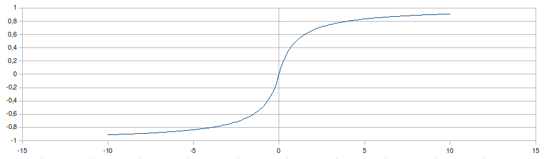

| Choisissez votre langue ! | Choose your language ! |
Définitions
Soit u=(un)n∈ℕ une suite bornée. Pour tout k≥0 posons Xk={un|n≥k}.La suite des ensembles Xk vérifie X0⊇X1⊇X2⊇ ... ⊇Xk-1⊇Xk⊇Xk+1⊇ ......
Tous les ensembles Xk sont , leur est majorée par la borne supérieure de la suite u, leur est minorée par la borne inférieure de la suite u.
Posons Mk=Sup(Xk) et mk=Inf(Xk).
A cause de la relation X0⊇X1⊇X2⊇ ... ⊇Xk-1⊇Xk⊇Xk+1⊇ ....., la suite (Mk) est et la suite (mk) est .
Ces deux suites sont donc .
Definitions
Let u=(un)n∈ℕ be a bounded sequence. For all k≥0 let Xk={un|n≥k}.The sequence of sets Xkverifies X0⊇X1⊇X2⊇ ... ⊇Xk-1⊇Xk⊇Xk+1⊇ ......
All sets Xk are , their is bounded by the upper bound of the sequence u, their is lower bounded by the lower bound of the sequence u.
Let Mk=Sup(Xk) and mk=Inf(Xk).
Because of the relation X0⊇X1⊇X2⊇ ... ⊇Xk-1⊇Xk⊇Xk+1⊇ ....., the sequence (Mk) is and the sequence (mk) is .
These two sequences are therefore .
Notations
Notations
lim sup (u) ou encore \( \displaystyle \limsup_{ n\to \infty }u_{n} \) ou encore \( \displaystyle \displaystyle \overline{lim}_{ n\to \infty }u_{n} \)
lim sup (u) or \( \displaystyle \limsup_{ n\to \infty }u_{n} \) or \( \displaystyle \displaystyle \overline{lim}_{ n\to \infty }u_{n} \)
lim inf (u) ou encore \( \displaystyle \liminf_{ n\to \infty }u_{n} \) ou encore \( \displaystyle \displaystyle \underline{lim}_{ n\to \infty }u_{n} \)
lim inf (u) or \( \displaystyle \liminf_{ n\to \infty }u_{n} \) or \( \displaystyle \displaystyle \underline{lim}_{ n\to \infty }u_{n} \)
Propriétés
Pour toute suite bornée u:Properties
For any bounded sequence u:Exemples
Pour une u de période k, lim sup u =Max(u0,u1,...,uk-1) et lim inf u =Min(u0,u1,...,uk-1)
L'appliquette suivante montre les termes successifs d'une suite admettant une limite supérieure égale à 2 et une limite inférieure égale à -1, elle possède en outre +1 comme point d'accumulation. Au début, il n'y a que les deux premiers, appuyez sur le bouton 'Suivant' pour en voir un de plus.
Appuyez sur '+10' pour en voir 10 de plus.
Appuyez sur 'Recommencer' pour recommencer depuis le début.
Examples
For a with period k, lim sup u =Max(u0,u1,...,uk-1) and lim inf u =Min(u0,u1,...,uk-1)
The following applet shows the successive terms of a sequence admitting an upper limit equal to 2 and a lower limit equal to -1, it also has +1 as an accumulation point . At first there are only the first two, press the 'Next' button to see one more.
Press '+10' to see 10 more.
Press 'Restart' to start over from the beginning.
Droite réelle achevée \( \displaystyle \overline{\mathbb{R}} \)
Jusqu'à présent les symboles +∞ et -∞ n'avaient pas de sens 'propre'; ils n'intervenaient que dans des écritures faisant intervenir des limites et dans des expressions du type n → +∞ signifiant en gros 'n devenant de plus en plus grand'.Nous allons maintenant faire en sorte de donner un sens individuel aux symboles +∞ et -∞. Naturellement ils ne représenteront pas des nombres réels, mais ils permettront de généraliser un grand nombre d'énoncés concernant les et les limites supérieures et inférieures des suites, sans distinction entre les cas 'borné' et 'non borné'.
Soit donc I l'intervalle ]-1,+1[ et soit J son [-1,+1].
On considère l' f:ℝ→ I donnée par:
f(x)=x/(1+|x|)
Extended real line \( \displaystyle \overline{\mathbb{R}} \)
Until now the symbols +∞ and -∞ had no 'proper' meaning; they occurred only in expressions involving limits and in expressions of the type n → +∞ meaning roughly 'n becoming larger and larger'.We will now make sure to give individual meaning to the +∞ and -∞ symbols. Naturally they will not represent real numbers , but they will allow generalizing a large number of statements concerning the and the upper and lower bounds of sequences, without distinguishing between the 'bounded' and 'unbounded' cases.
Let I be the interval ]-1,+1[ and let J be its [-1,+1].
We consider the f:ℝ→ I given by:
f(x)=x/(1+|x|)

g(x)=x/(1-|x|)
g(x)=x/(1-|x|)
f(-∞)=-1 et f(+∞)=+1
qui sera donc encore une bijection de \( \displaystyle \overline{\mathbb{R}} \) sur J, la bijection réciproque g étant caractérisée par g(-1)=-∞ et g(+1)=+∞
Remarquons maintenant que J est avec la d(x,y)=|x-y| un espace métrique.
Nous pouvons utiliser g pour 'transporter' cette distance sur \( \displaystyle \overline{\mathbb{R}} \) en posant:
d(x,y)=d(g(x),g(y))
faisant ainsi de \( \displaystyle \overline{\mathbb{R}} \) un .
Notons que la restriction de cette distance à ℝ n'est pas égale à la distance usuelle, par exemple d(1,2)=1/6 alors que |1-2|=1. Cependant les des nombres réels sont les mêmes pour les deux distances.
Cela dit pour cette distance les voisinages de +∞ dans \( \displaystyle \overline{\mathbb{R}} \) sont tous les ensembles contenant des ensembles de la forme {+∞} ∪ ]M,+∞[.
Les voisinages de -∞ dans \( \displaystyle \overline{\mathbb{R}} \) sont tous les ensembles contenant des ensembles de la forme {-∞} ∪ ]+∞,m[.
Ces remarques étant faites la convergence de la suite u vers le réel a peut être exprimée ainsi:
f(-∞)=-1 and f(+∞)=+1
which will still be a bijection de \( \displaystyle \overline{\mathbb{R}} \) onto J, the inverse bijection g being characterized by g(-1)=-∞ et g(+1)=+∞
Notice now that J is together with the d(x,y)=|x-y| a metric space.
We can use g to 'carry' this distance onto \( \displaystyle \overline{\mathbb{R}} \) by setting:
d(x,y)=d(g(x),g(y))
thus making \( \displaystyle \overline{\mathbb{R}} \) a .
Note that the restriction of this distance to ℝ is not the same as the usual distance, for exemple d(1,2)=1/6 although |1-2|=1. Nevertheless the of real numbers are the same for both distances.
After this simple remark for this distance the neighborhoods of +∞ in \( \displaystyle \overline{\mathbb{R}} \) are all sets containing subsets of the form {+∞} ∪ ]M,+∞[.
The neighborhoods of -∞ in \( \displaystyle \overline{\mathbb{R}} \) are all the sets having subsets of the form {-∞} ∪ ]+∞,m[.
Now the convergence of u towards the real number a can be expressed the following way:
Prolongement de la relation d'ordre.
Il suffit de transporter la relation d'ordre sur J, donc:+∞ ≥ x ∀x∈\(\displaystyle \overline{\mathbb{R}}\)
-∞ ≤ x ∀x∈ \(\displaystyle \overline{\mathbb{R}}\)
La droite réelle achevée possède donc un (+∞) et un plus petit élément (-∞)
Prolongement partiel des opérations algébriques
Somme
Nous convenons que:(+∞)+(+∞)=(+∞)
(+∞)+x=+∞ ∀x∈ℝ
(-∞)+(-∞)=(-∞)
(-∞)+x=-∞ ∀x∈ℝ
l'expression (+∞)+(-∞) n'a pas de sens.
l'expression (-∞)+(+∞) n'a pas de sens.
On remarquera que ces deux derniers cas correspondent exactement aux des limites de sommes de suites.
Produit
Nous convenons le produit est commutatif et que:(+∞)×(+∞)=(+∞)
(-∞)×(-∞)=(+∞)
(-∞)×(+∞)=(-∞)
\( \displaystyle a\times (+\infty )=+\infty ~~\forall a\in \mathbb{R}_{+}^{\ast }~~(a> 0) \)
\( \displaystyle a\times (-\infty )=-\infty ~~\forall a\in \mathbb{R}_{+}^{\ast }~~(a> 0) \)
\( \displaystyle a\times (+\infty )=-\infty ~~\forall a\in \mathbb{R}_{-}^{\ast }~~(a< 0) \)
\( \displaystyle a\times (-\infty )=+\infty ~~\forall a\in \mathbb{R}_{-}^{\ast }~~(a< 0) \)
L'expression 0×+∞ n'a pas de sens.L'expression 0×-∞ n'a pas de sens.
On remarquera que ces deux derniers cas correspondent exactement aux des limites de produits de suites.
Quotient
Pour tout réel a a/+∞=0Pour tout réel a a/-∞=0
\( \displaystyle (+\infty )/a=+\infty ~~\forall a\in \mathbb{R}_{+}^{\ast }~~(a> 0) \)
\( \displaystyle (-\infty )/a=-\infty ~~\forall a\in \mathbb{R}_{+}^{\ast }~~(a> 0) \)
\( \displaystyle (+\infty )/a=-\infty ~~\forall a\in \mathbb{R}_{-}^{\ast }~~(a< 0) \)
\( \displaystyle (-\infty )/a=+\infty ~~\forall a\in \mathbb{R}_{-}^{\ast }~~(a< 0) \)
Aucune expression du type b/0 avec b ∈ \( \displaystyle \overline{\mathbb{R}} n'a de sens.) (+∞)/(+∞) n'a pas de sens.
(+∞)/(-∞) n'a pas de sens.
(-∞)/(+∞) n'a pas de sens.
(-∞)/(-∞) n'a pas de sens.
On remarquera que ces quatre derniers cas correspondent encore à des des limites de quotients de suites.
Simplification de quelques enonçés.
On pourra maintenant dire que dans la droite réelle achevée:Extension of the order
It's enough to carry the order on J, hence:+∞ ≥ x ∀x∈\(\displaystyle \overline{\mathbb{R}}\)
-∞ ≤ x ∀x∈ \(\displaystyle \overline{\mathbb{R}}\)
So the extended real line possesses a (+∞) and a smallest element as well (-∞)
Partial extension of algebraic operations
Sum
We agree that:(+∞)+(+∞)=(+∞)
(+∞)+x=+∞ ∀x∈ℝ
(-∞)+(-∞)=(-∞)
(-∞)+x=-∞ ∀x∈ℝ
the expression (+∞)+(-∞) has no meaning.
the expression (-∞)+(+∞) has no meaning.
We will notice that these last two cases correspond exactly to for limits of sums of sequences.
Product
We agree that the product is commutative and that:(+∞)×(+∞)=(+∞)
(-∞)×(-∞)=(+∞)
(-∞)×(+∞)=(-∞)
\( \displaystyle a\times (+\infty )=+\infty ~~\forall a\in \mathbb{R}_{+}^{\ast }~~(a> 0) \)
\( \displaystyle a\times (-\infty )=-\infty ~~\forall a\in \mathbb{R}_{+}^{\ast }~~(a> 0) \)
\( \displaystyle a\times (+\infty )=-\infty ~~\forall a\in \mathbb{R}_{-}^{\ast }~~(a< 0) \)
\( \displaystyle a\times (-\infty )=+\infty ~~\forall a\in \mathbb{R}_{-}^{\ast }~~(a< 0) \)
The expression 0×+∞ has no meaning.The expression 0×-∞ has no meaning.
We will nortice that hese last two cases correspond exactly to for limits of product sequences
Quotient
For any real a a/+∞=0For any real a a/-∞=0
\( \displaystyle (+\infty )/a=+\infty ~~\forall a\in \mathbb{R}_{+}^{\ast }~~(a> 0) \)
\( \displaystyle (-\infty )/a=-\infty ~~\forall a\in \mathbb{R}_{+}^{\ast }~~(a> 0) \)
\( \displaystyle (+\infty )/a=-\infty ~~\forall a\in \mathbb{R}_{-}^{\ast }~~(a< 0) \)
\( \displaystyle (-\infty )/a=+\infty ~~\forall a\in \mathbb{R}_{-}^{\ast }~~(a< 0) \)
No expression of the kind b/0 with b ∈ \( \displaystyle \overline{\mathbb{R}} \) has meaning.(+∞)/(+∞) has no meaning.
(+∞)/(-∞) has no meaning.
(-∞)/(+∞) has no meaning.
(-∞)/(-∞) has no meaning.
We will notice that these last four cases again correspond to for limits of quotient sequences.
Simplification of some statements
We can now say that in the extended real line :|
Création Gilles Dubois - licence CC-BY-SA
Created by Gilles Dubois - licence CC-BY-SA
|
Septembre 2023
September 2023
|
Version mobile Jquery
Mobile Jquery version
|
|